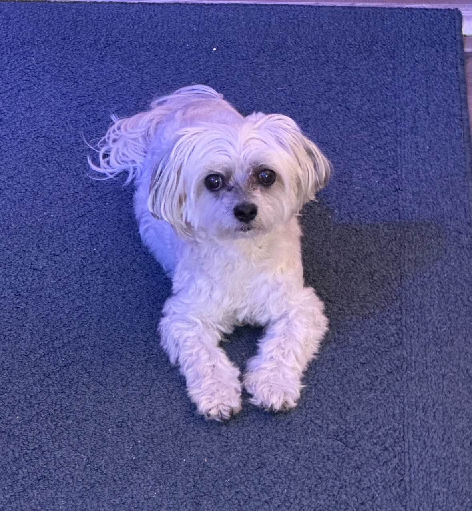
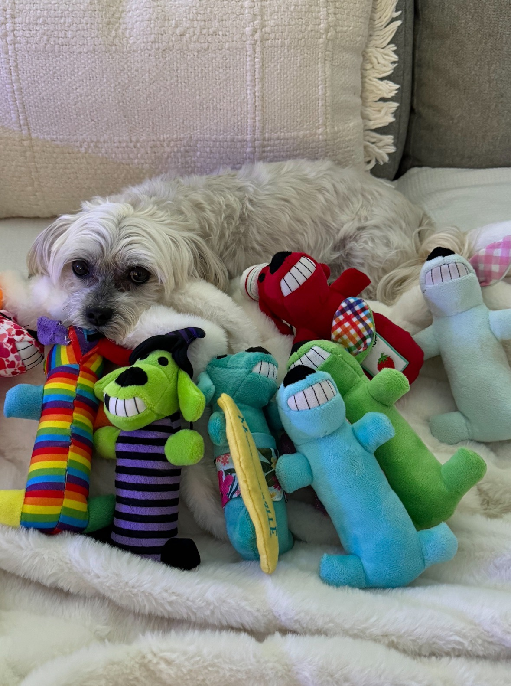

Flooding and storm surge can be mitigated in a wide variety of ways, however the best solution is to seal your home’s openings using a variety of methods if there is only 24-48 hours to prepare for imminent landfall. Water can seep in from anywhere, so it is best to focus on what you can control. The level to which you seal your home will depend on the level of surge inundation expected.
The level to which you should seal your home can be roughly determined by using several sources of publicly available data. There is an overwhelming number of data sources that provide estimates for wind, rainfall, time, etc. but we will focus on storm surge. The height of storm surge will dictate the level of barrier that you should construct. The National Weather Service (2024) defines storm surge as, “an abnormal rise of water generated by a storm, over and above the predicted astronomical tide.” Estimates often include ranges from 1-15 feet, however this estimate is not a true representation of how height the water will be at your home based on its elevation.
NHC issues worst case scenario estimates to save lives and ensure people can evacuate. It is critical that you follow state and local guidelines on when you evacuate and do not use this as a justification to shelter in place when flooding could occur. The reason why this is important to follow mandatory guidelines is because hurricanes are unpredictable and tend to “wobble,” or slightly alter their path that often goes against the initial computer models.
The NOAA tide prediction chart can be used to understand how the tides line up with the timing of storm surge as the storm moves in. The tide prediction collects data from multiple sources and combines them into a “predicted water elevation” variable. This predicted water elevation is how you will know the level you should seal your home, as well as the height of the barriers you should construct.
The best method to sealing your home is a combination of sand bags, tarps, foam spray, caulk, flex seal, and other similar products. First examine the outside of your house and locate all openings such as exterior doors, vents, ducting, crawl spaces, etc. Develop a plan to seal each opening for example a door’s seams can be taped, a tarp placed on the exterior, interlocking sand bags, and tape the tarp in place. Each opening will require you to use your MacGyver skills.
The level at which you should seal your home will depend on the level of surge or the expected total water elevation in comparison to your home.
I used NOAA’s ETSS stn predicted water levels data to help plan and size my flood barriers. Now I want to share what I have learned to help you protect homes.
NOAA, NHC, and local weather services provide guidance on how to protect your home based on the maximum potential threats. You should always evacuate when mandatory orders are in place, however here is how you can gauge the severity of the event with data.
Helene and Milton presented similar but different hazards. Flooding and wind for the Tampa Bay Area.
NOAA total prediction allows you to understand the predicted water level MSL in comparison to your home. Houses are surveyed and must report a bottom elevation.
The difference between the predicted water level MSL and the lowest elevation of your home is the calculated size of the barriers that need to be constructed.
There are a wide variety of options depending on the level of barrier required:
No flooding projected, however may want to place sand bags in case track changes.
0-3 feet: Sand bags + tarp + taping seams
4+ feet: Caulking door shut or foam/peal spray.
Low lying entries to your home: dryer vents, AC plumbing lines, cracks in exterior, new additions may experience seepage,
Write Jupyter notebook to scrape ETSS stn location closest to your home.
User enters the elevation of their home
Calculates the size of barrier required. Plots data.
Updates
August 21, 2024
We identified Claire needed medical attention on 9/16 using her PAW Tracker. Claire's breathing rate was significantly greater than normal, so we took her to the emergency vet. The first vet evaluated her as normal and released her. We felt it was necessary to seek advice from her cardiology team, which advised her to stay overnight in the ICU. Claire's chest x-rays showed minor fluid in her lungs. Additional testing identified she developed pulmonary hypertension and now takes sildenafil. Claire was released on 9/17 and doing well since. Pulmonary hypertension can mimic heart failure with increased breathing rate. Python coding outlier detection added.

August 7, 2024
Claire visited her cardiologist for a scheduled echocardiogram and bloodwork check up. Claire received positive news that while her heart is significantly enlarged, it is no bigger than it was, her function is no further reduced, and she has not developed pulmonary hypertension. Her breathing rate continues to be stable. Python and Excel have been updated.
July 8, 2024
Claire has been doing well overall and happy. She enjoys going outside and for short walks (two blocks). Her breathing rate continues to be stable. Python and Excel have been updated.

June 18, 2024
Claire visited the veterinarian for a check up last week. Claire needed to have new chest x-rays and blood to analyze her kidney and electrolyte levels. The veterinarian noted Claire's chart showed stable resting breathing rates.

May 14, 2024
Claire visited the veterinarian for a check because she has experienced a recent increase in coughing. Claire's chest x-rays showed slight fluid accumulation in her lungs, so the furosemide dose was increased to a 0.8 mL twice daily. An increase in her resting breathing rate was not observed. This is why it is important to look for other signs as well.

February 24, 2024
Frequency data tabulation began in order to better understand Claire's heart average resting breathing rate.
January 12, 2024
Claire went into congestive heart failure. Claire showed signs of rapid breathing (>40 breaths per minute) and coughing frequently. Claire was taken to the emergency veterinarian and recovered overnight in the ICU. Claire started on the medicine furosemide in order to draw the fluid out of her lungs caused by her heart not functioning properly. PAW Tracker was started, however data was not tabulated.